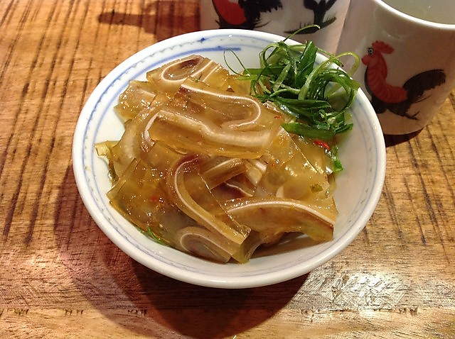

Lou mei

Description
Lou mei is the Cantonese name given to dishes made by braising in a sauce known as a master stock or lou sauce. There are many varieties of this dish,
the one described here is the chinese version made with pig ears.
Ingredients
- Pig ears
- Water
- Soy sausage
- Garlic
- Ginger
- Sugar
- Shaoxing (wine for cooking)
- Black pepper
- Hot pepper
- Star anise
Preparation
- Clean the pig ears carefully.
- Boil the pig ears for about an hour with ginger and garlic to remove the intense odor.
- Prepare the lou mei sausage with soy sausage, garlic, sugar and shaoxing.
- Cover the ears with the lou mei sausage and cook them slowly from 30 minutes to more than 1 hour according to the preferred consistency.
- Wait until they are cold and serve them sliced with steamed vegetables.
Home